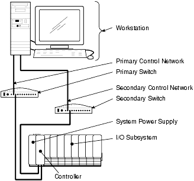
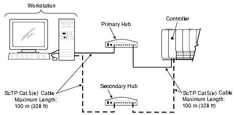
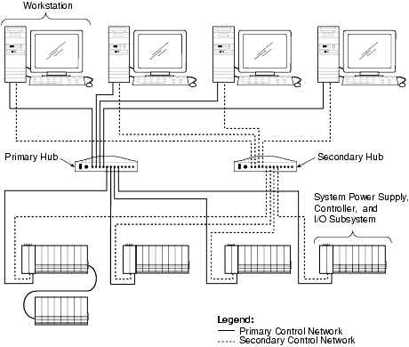
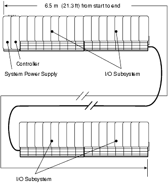

Source: DeltaV Scalable Process System — Hardware Installation and Reference Manual, D800001X312, April 2021 (Emerson). Chapter 1, "Overview," pp. 15–22.
Welcome to the very first lesson in the DeltaV M-series hardware training series. Before you pick up a screwdriver or crimp a cable, you need a clear mental model of the entire system — what it looks like, how its pieces relate, and which terms the manual uses. This lesson walks you through that foundation so that every subsequent chapter makes sense.
1.1 — The DeltaV System at a Glance
The DeltaV automation system is built from five major categories of components working together. Understanding these categories is the single most important starting point for any installer, technician, or operator.
Key Concept — Five Pillars of DeltaV: The system is composed of (1) I/O subsystems that talk to field devices, (2) controllers that manage local control and data flow, (3) power supplies that keep everything running, (4) workstations that give operators a graphical interface, and (5) a Control Network that connects it all.
Think of it like this: field devices out in the plant generate data — a temperature reading, a valve position, a flow rate. The I/O subsystem converts those physical signals into a digital format. The controller sits between the I/O and the rest of the world, executing control logic and managing communications. Workstations let humans see what is happening and make decisions. And the Control Network — a dedicated Ethernet LAN — is the nervous system tying it all together.

Figure 1-1: DeltaV System Overview Diagram — a high-level view of how the major components connect. (Source: p. 15)
Reference: Figure 1-1, p. 15.
1.2 — DeltaV System Equipment
Now let us get more specific. The DeltaV system uses DIN rail-mounted interconnecting carriers and modular components designed for installation inside an enclosure. The carriers provide both power and communication connections. When you see the term "8-wide" in a carrier name, it means the carrier has eight slots for cards.
Key Concept — Modular by Design: DeltaV I/O cards and controllers simply snap onto carriers for installation. You do not solder anything. You do not hard-wire logic boards. The carrier handles power distribution and backplane communication.
Here are the main pieces of equipment you will encounter in every DeltaV installation:
Equipment
What It Does
Key Detail
Power Controller Carriers
Mount on DIN rails; provide power and slots for the controller
2-wide and 4-wide versions; controller goes in the right slot
I/O Interface Carriers
Mount on DIN rails; hold I/O terminal blocks and I/O cards
8-wide is the standard; number in name = slot count
LocalBus
Internal power bus + communication bus connecting carriers
Total length cannot exceed 6.5 m (21.3 ft)
I/O Terminal Blocks
Snap onto the carrier; provide screw terminations for field wiring
Can be installed before cards — saves time and money
I/O Cards
Snap over terminal blocks; convert field signals to digital
Many Series 2 cards support redundancy
Controllers
Perform local control; manage I/O ↔ Control Network comms
Mount on the right slot of the 2-wide carrier (horizontal)
System Power Supplies
Provide regulated power to the system
AC/DC and Dual DC/DC options; IS version available
Workstations
Graphical user interface for configuration, operation, and diagnostics
System Identifier is a USB connector shipped with the License Pack
Bulk Power Supplies
Supply power to system or field devices (isolated from each other)
Separate from system power supply
Tip — I/O Terminal Blocks First: One of the smart design choices in DeltaV is that you can install I/O terminal blocks and connect all your field wiring before installing any I/O cards or controllers. This means electricians can wire up the system while technicians continue working on other parts — a significant cost and schedule advantage.
1.2.1 — The Control Network
The Control Network is an isolated Ethernet LAN dedicated exclusively to the DeltaV system. It connects controllers to workstations. It is not your plant-wide office network — it is a completely separate, purpose-built communication backbone.
Pitfall — Never Connect Unapproved Equipment: Connecting unapproved non-DeltaV equipment to the Control Network can cause unpredictable system operation. This is not a suggestion — it is a caution from the manual. The Control Network is designed for DeltaV traffic only.
The Control Network is redundant by design. It has two separate communication channels — Primary and Secondary — each implemented with its own Ethernet NIC card and its own hub or switch. If one channel fails, the other takes over seamlessly.
For cable runs up to 100 meters (328 feet), you use standard Category 5(e) Screened Twisted Pair (ScTP) cable. For runs up to 2 kilometers (6,562 feet), you use fiber-optic switches. Fiber is also preferred when electromagnetic noise is a concern or when you need ground isolation between buildings.
Figure 1-3: No Hub System Example — the simplest possible Control Network, with a single cable from workstation to controller. (Source: p. 18)

Figure 1-4: Control Network Example with 2 nodes — hubs/switches come into play once you have more than one device on the network. (Source: p. 19)

Figure 1-5: Control Network Example with 8 nodes — a more typical production network layout. (Source: p. 19)
Tip — When to Use Fiber: If your plant has variable frequency drives, large motors, or near-lightning-strike risk between buildings, choose fiber-optic links. It costs more upfront but saves enormous headaches from noise-related dropouts.
1.2.2 — The Remote Network
Separate from the Control Network, the DeltaV Remote Network provides communications between remote workstations and the DeltaV system. It can be a dedicated LAN or your existing plant-wide LAN (containing PCs, printers, etc.).
The Remote Network connects to the DeltaV system through an Application Station or the ProfessionalPLUS workstation running DeltaV Remote Access Services (RAS). A router is required to minimize network traffic between the plant-wide LAN and the DeltaV system.
Key Concept — Dual Roles of Workstations: The ProfessionalPLUS and Application Station serve dual purposes. They sit on the Control Network and bridge to the Remote Network. They act as RAS servers. This is also why you must enable Remote Network redundancy in DeltaV Explorer for both the ProfessionalPLUS and any Application Station connected to the remote network.
Figure 1-6: Dedicated Remote Network — remote operator stations connect through a separate network switched independently from the control network. (Source: p. 20)
Figure 1-7: Remote Plant-Wide LAN connected to a DeltaV System — a router separates the plant LAN from the control network for traffic isolation. (Source: p. 22)
Pitfall — Network Redundancy Must Be Enabled on Both Sides: If you enable Remote Network redundancy for remote nodes in DeltaV Explorer, you must also enable it on the ProfessionalPLUS and Application Station nodes. If you skip this step, you lose all remote data visibility if the Primary network connection drops.
Summary — What to Remember
Let us consolidate the key takeaways from this first lesson:
Five components make up the DeltaV system: I/O subsystem, controllers, power supplies, workstations, and the Control Network.
Everything mounts on DIN rails inside an enclosure. Carriers provide power and communication buses. Cards snap onto carriers.
The LocalBus has a strict 6.5 m (21.3 ft) maximum length — plan your carrier layout accordingly.
The Control Network is a dedicated, redundant Ethernet LAN. Never connect non-DeltaV equipment to it.
The Remote Network provides access from outside the control network, bridged through ProfessionalPLUS or Application Station nodes.
Always enable redundancy on both the Control Network and Remote Network sides when configuring remote access.
Quiz — Test Your Understanding
Question 1
What are the five major components of the DeltaV system?
Show Answer
I/O subsystem, controllers, power supplies, workstations, and the Control Network.
Question 2
What is the maximum total length of a LocalBus, including all cabling?
Show Answer
6.5 meters (21.3 feet). This supports up to eight 8-wide carriers, two 2-wide carriers, and three carrier extenders.
Question 3
Why must you not connect unapproved equipment to the DeltaV Control Network?
Show Answer
Connecting unapproved equipment can cause unpredictable system operation. The Control Network is designed and dedicated exclusively for DeltaV traffic.
Question 4
How many communication channels does the Control Network have, and why?
Show Answer
Two — Primary and Secondary. Each uses a separate Ethernet NIC and hub/switch. The dual-channel design provides communications reliability through redundancy.

Technical schematic showing two large rectangular modular units arranged vertically with internal segmentation into vertical compartments/panels. A dashed line forms a connection loop between the right side of the top unit and the left side of the bottom unit. Callout lines point to components with text annotations. Center symbols between the units indicate control components within the connection pathway. (page 16)
Direct connection diagram between a workstation and controller. Shows a CRT monitor with keyboard connected to a desktop tower PC on the left, a physical cable with annotation 'No switch cable, shielded connectors at both ends' in the center, and a modular rack-mounted industrial controller on the right. Depicts a direct point-to-point connection without a network switch, with EMI-shielded connectors for industrial environments. (page 18)
class="quiz">
Question 5
What must you do when enabling Remote Network redundancy for remote nodes?
Show Answer
You must also enable Remote Network redundancy in DeltaV Explorer for the ProfessionalPLUS and any Application Station nodes connected to the remote network. Otherwise, remote data is lost if the Primary connection drops.
DeltaV Scalable Process System — Hardware Installation and Reference Manual, D800001X312, April 2021 (Emerson). Chapter 1, "Overview," pp. 15–22.